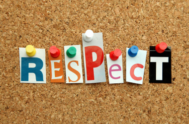

What is Respect?
Today we are going to starta a new Unit about Respect. We will read from a book called "Respect" by Lucia Raatma, and we will talk about ways that we can show respectful behavior.
Respect means caring about other people's feelings, space, and belongings, and expecting them to show the same care for you. Even when we disagree with someone we can still show them respect by disagreeing in a nice way that doesn't hurt their feelings.
How Can We Show Respectful Behavior?
There are many ways that we can show respectful behavior in school and at home. For example if someone is talking we can be respectful by listening well and not interrupting them. How can we be respectful in these other situations?
| Situation | Behavior |
|---|---|
| You are at your friend's house you want to play with their new game or toy. | |
| Your teacher is giving you directions. | |
| Someone is looking at a website or game on the computer and you are curious about what it is. | |
| A classmate is making fun of another classmate because of the game he/she is playing. |
Today's Assignment
Use Kid Pix to make a poster showing respectful behavior from 1 of the 4 situations above.
Back to School Portal